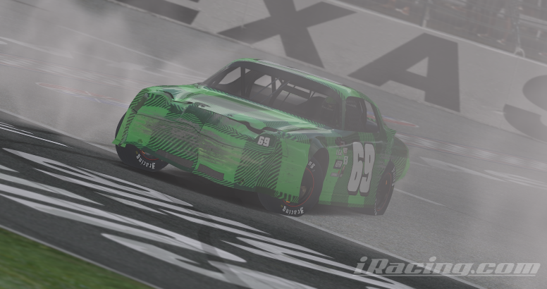

The Instagram Quarantine Street Stock Series
Season 1: A New Hope

Season 1 logo designed by Kenneth Bueno
The hype following the Saturday Night Shootout carried for days, and Charlie, with the help of Kenneth and Kelan, put together a 9-race schedule and Season 1 of IQSSL was introduced!
Notable tracks on the schedule include Daytona, Lanier Dirt, and and Michigan. A combination of short tracks, dirt tracks and large ovals offered drivers to show their skills on a variety of surfaces.
Lots of great moments were shared with the gang throughout season 1. starting with Blaze McKinney kicking off his championship journey by winning the first race at Charlotte.
The inagural season saw 5 different winners across 9 races, with a lot of notable moments and victories to be cherished from every event.

Blaze McKinney takes the checkered in race 1 over Kenneth Bueno
Green flag at USA Speedway
Shane leads from the middle at Dayytoonaaaaaaa!!!!

Kelan leads the way to his breakout win of the season

oh, hello there.
JJ Hill makes a visit to the Space Station
A season of exciting racing was also coupled with new traditions, including the salute before the green flag, heat racing, the Charlotte Throwback race, and the IQSSL Pre Race show, starting at Daytona and broadcasted on KBRN.

Pre race salutes were a staple tradition of IQSSL
The Charlotte Throwback race was also a highly acclaimed tradition in the league.


The IQSSL Pre Race Show presented by Lets Go Logano was hosted by Charlie and Kenneth.
The Pre Race Show allowed drivers to express their thoughts in and interview before the race, and many took it as an opportunity to reveal their paint schemes for the upcoming event!
As the season went on and came to a close, Blaze McKinney remained untouched, then took home the Season 1 Championship and 4 wins! Shane DiMantova, who was incredibly consistent, finished a decent 2nd, 11 points behind.
Final Points Standings:
1. Blaze McKinney: 81pts
2. Shane DiMantova: 70pts
3. Kelan Belsha: 65pts
4. Glen Bundren: 62pts
5. Kenneth Bueno: 61pts
6. Charlie Baier: 52pts
6. JJ Hill: 52pts
8. Jack D'Andrea: 42pts
9. Eli Commerford: 25pts
9. James Jungemann: 25pts
11. Preston Cope: 6pts
Season 1 Race Winners:
| Shootout |
Charlotte |
Texas |
USA Speedway |
Daytona |

Kenneth Bueno
|
Blaze McKinney
|

Shane DiMantova
|
JJ Hill
|
Glen Bundren
|
| Charlotte Throwback |
Phoenix |
Lanier Dirt |
Michigan |
Texas |
|
Blaze McKinney
|
Blaze McKinney
|
Kelan Belsha
|
Blaze McKinney
|
Shane DiMantova
|
IQSSL Season 1 was a raging success!
Lots of memories were created on the virtual racetrack.
An emotional interview by Charlie Baier on Twitch after the conclusion of the final race only increased the anticipation for a second season.